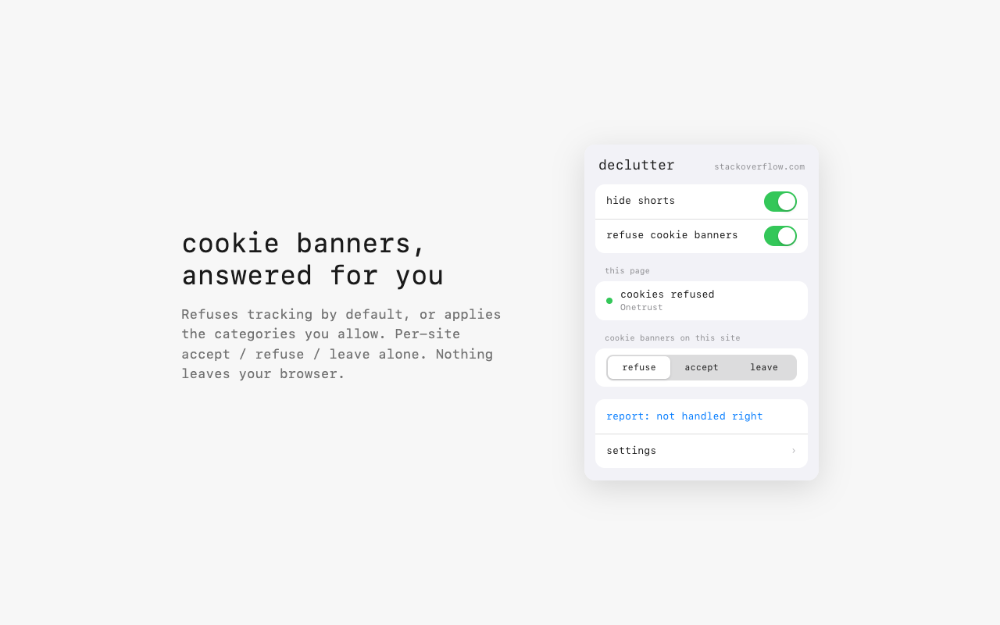
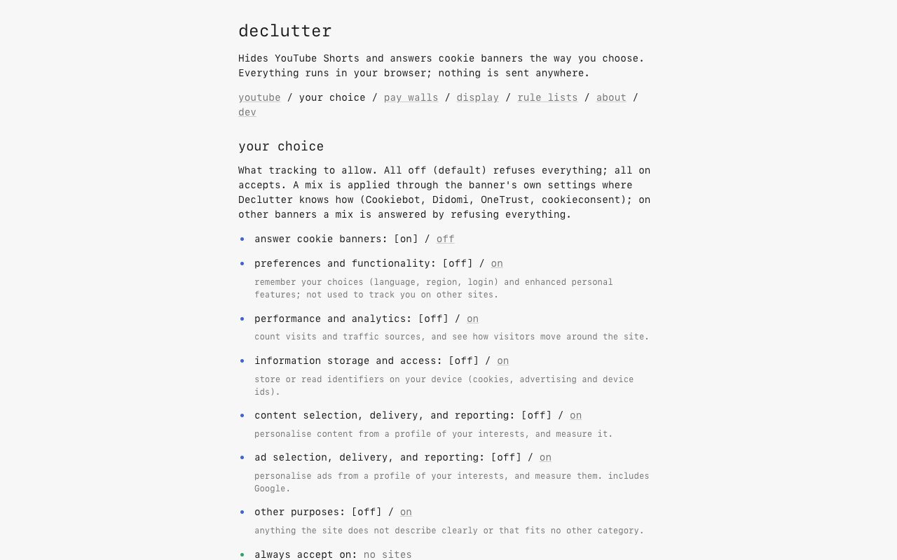
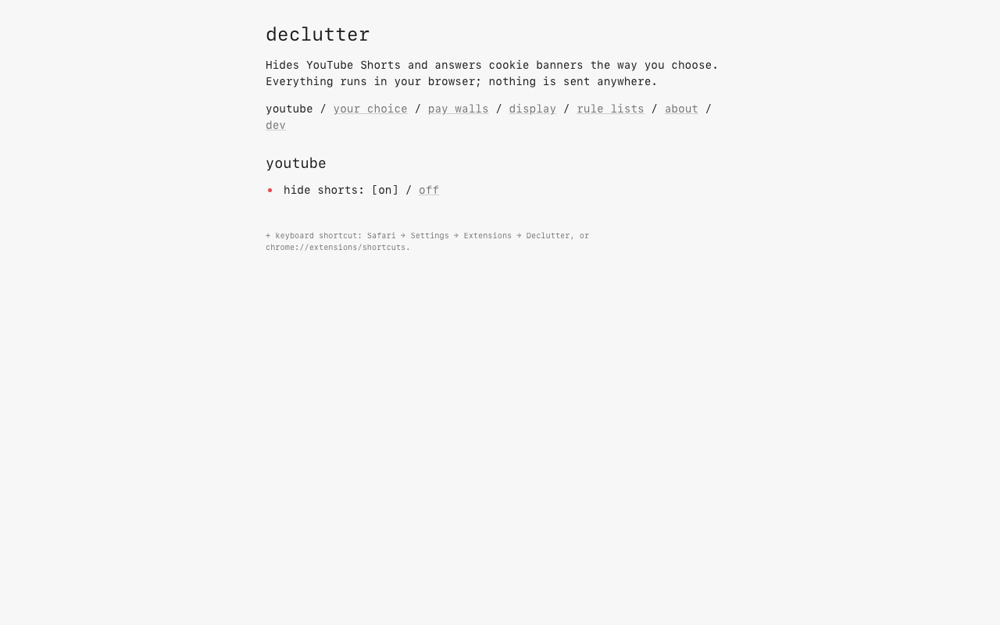
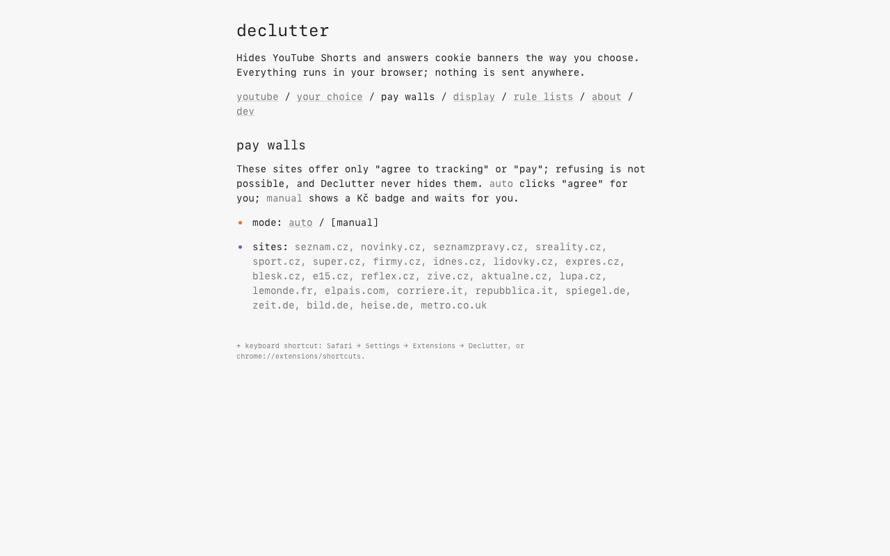
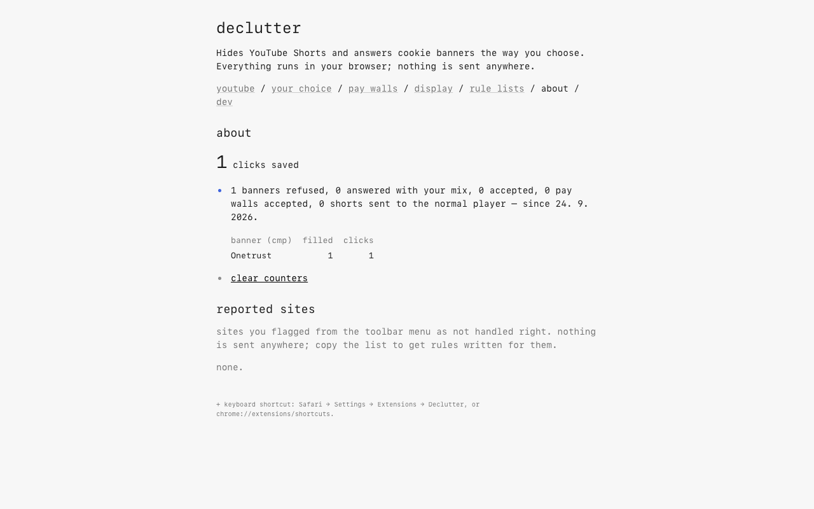

declutter
Hides YouTube Shorts and answers cookie banners the way you choose.
Nothing leaves your browser.
what it does
-
youtube, without shorts.
Hides the Shorts shelf, tab, and entries in search and subscriptions, on desktop and mobile YouTube. Open a Shorts link and it plays in the normal video player.
-
cookie banners, answered.
Refuses everything that isn’t strictly necessary by default. declutter answers through the banner’s own controls, using the choices you set.
-
pay walls stay your decision.
“Agree to tracking or subscribe” walls are never hidden or refused. Manual mode is the default: a badge tells you there’s a choice to make. Turn on auto mode only if you want declutter to agree to tracking for you.
Works on sites worldwide through DuckDuckGo’s open-source autoconsent, plus its own rules for sites autoconsent misses.
your choice
Refuse by default. Or choose what to allow, category by category, using the same categories as Consent-O-Matic.
- preferences & functionality
- [off] / on
- performance & analytics
- [off] / on
- information storage & access
- [off] / on
- content selection & reporting
- [off] / on
- ad selection & reporting
- [off] / on
- other purposes
- [off] / on
Your exact mix is applied on Cookiebot, Didomi, OneTrust, and cookieconsent banners. On other banners, a mixed choice falls back to refusing. All off refuses optional purposes; all on accepts.
Per site: refuse / accept / leave
Set exceptions from the toolbar menu. Leave a banner alone when you want to handle it yourself.
privacy
No account. No analytics. No server.
Settings, counters, and sites you flag as “not handled right” stay in your browser’s extension storage. Reports aren’t sent anywhere. declutter doesn’t record or transmit your browsing history.
The only requests declutter itself makes are to fetch rule lists you choose to add in settings. Those downloads expose your IP address to the list’s host, like any download.
read the privacy policyscreenshots
The extension itself. Open any image for a closer look.
{kind=link}

{kind=link}

{kind=link}

{kind=link}

{kind=link}

a few questions
Does it work on every site?
No. It covers hundreds of consent platforms through DuckDuckGo’s autoconsent, plus its own rules for sites it misses. Banners change. If one isn’t handled correctly, flag it in the toolbar menu; the report stays local until you choose to share it.
Does it block ads or bypass pay walls?
No. declutter hides YouTube Shorts and answers consent banners. It doesn’t block ads or unlock paid content. Consent-or-pay walls stay visible, and auto mode means agreeing to tracking.
Why does it need access to websites?
Cookie banners can appear on any site. declutter needs page access to find them and answer through their controls. The work happens in your browser; page contents aren’t collected or sent anywhere.
Is it really free?
Yes. All features are free, with no account or subscription. The code is open source under the MIT license. Tips are optional.
tip jar
If declutter saves you a few clicks, you can leave a tip to support its upkeep. Every feature is free either way.
leave a tip